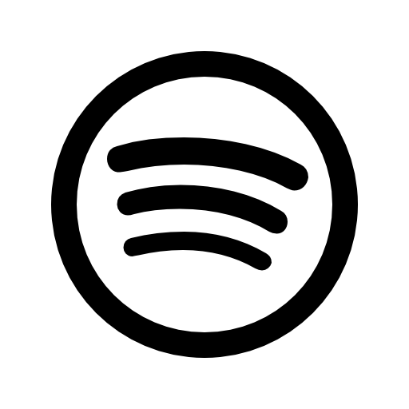

"Spotify"
Este es nuestro Spotify, la plataforma donde "hay que estar" si haces musica, cuidado con el sentido comun que "hay que comprar".
Seguinos"Instagram"
Este es nuestro Instagram, la red donde todos somos lindos y felices, donde el filtro es rey.
Seguinos"Youtube"
Este es nuestro Youtube, cuidado con lo que decis aca, no vaya a ser que te bajen todo el contenido que tardaste meses en producir por que a alguien no le gusto.
Seguinos"Facebook"
Y este nuestro Facebook, padre de las redes... mentira, no tenemos Facebook, sentiamos que si abriamos uno tambien teniamos que abrir un fotolog y no se puede.
Seguinos